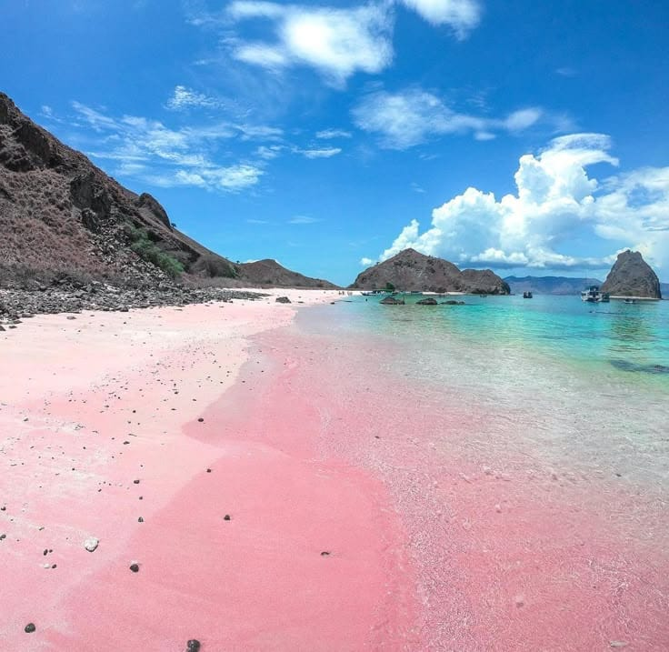
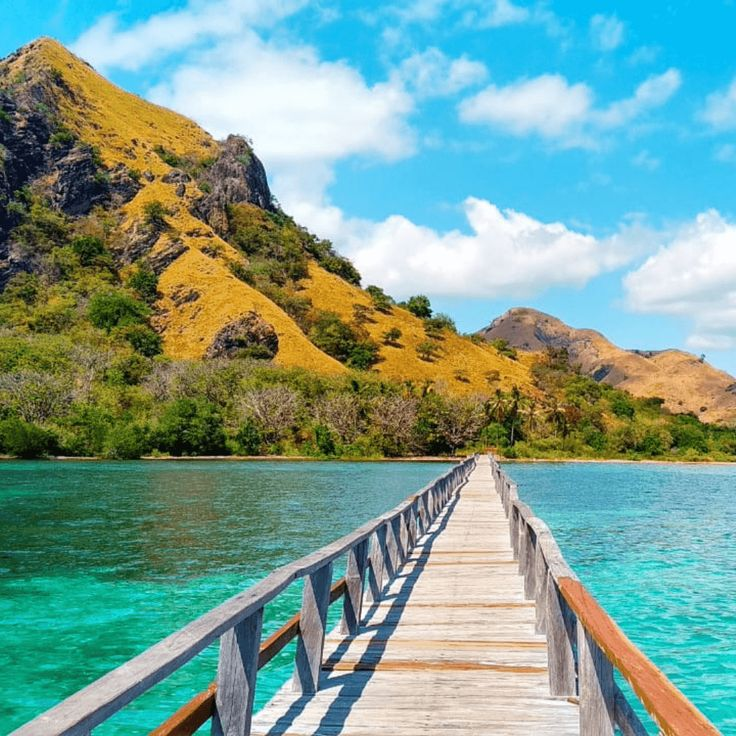
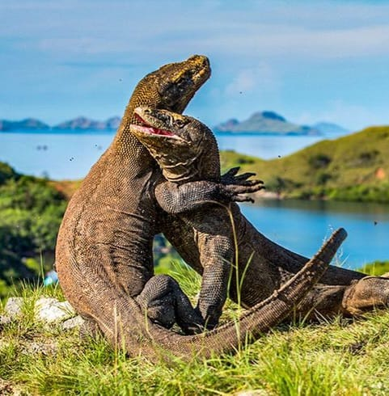
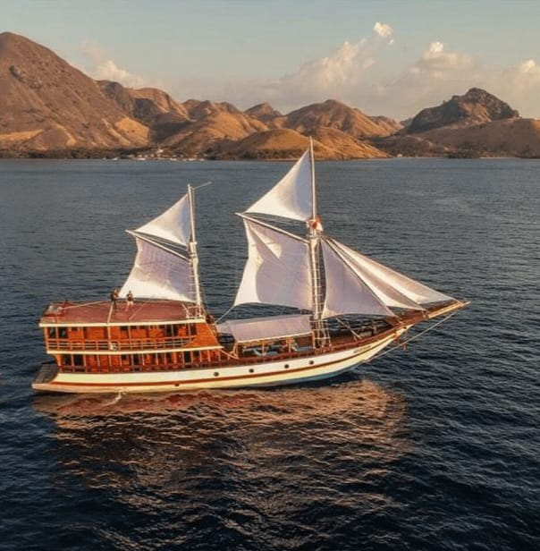

Labuan Bajo is a fishing town located at the western end of the large island of Flores in the East Nusa Tenggara province of Indonesia. It is in Komodo District. It is the capital of the West Manggarai Regency, one of the eight regencies on Flores Island.
Once a small fishing village, Labuan Bajo is now a tourist center as well as a centre of government for the surrounding region. The roads link Labuan Bajo to other towns across Flores such as Ruteng, Bajawa, Ende and Maumere.




Discover the underwater world rich with coral reefs and tropical fish around Komodo National Park.
Explore the beauty of Padar Island, Komodo Island, and Pink Beach on a traditional Phinisi boat.
Enjoy the sunset on the Bukit Cinta or from the deck of the ship, an unforgettable experience!